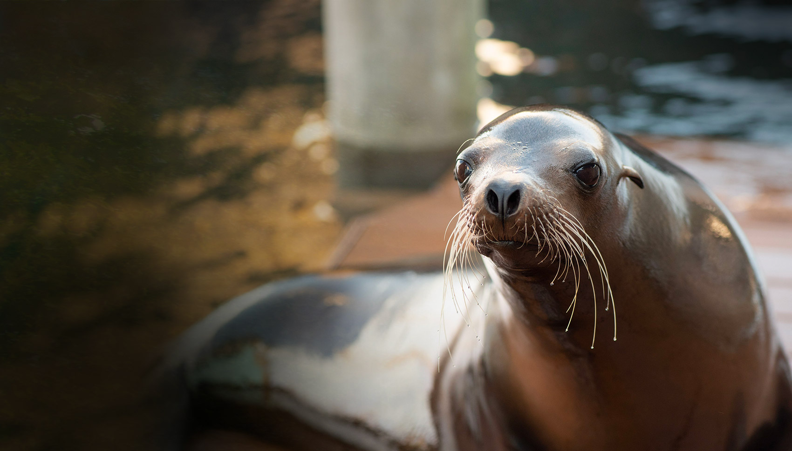

Adventure Cove
Columbus Zoo & Aquarium · Photo Tour #32
I stopped by Adventure Cove at Columbus Zoo, home to the zoo's ambassador animals. I watched the sea lions glide through their lagoons, then visited the Animal Encounters Village, where around fifty species live side by side.

Sea lion photo: Columbus Zoo and Aquarium.
I visited Adventure Cove, which opened on 10 July 2020. It is the zoo's home for its ambassador animals.
The sea lions have the lagoons, with underwater viewing so I can watch them glide past. Next door in the Animal Encounters Village, around fifty species live side by side — serval, kinkajou, toucan, sloth, capybara, a red-legged seriema, a short-beaked echidna, and a bat-eared fox.
There's always one more small animal here I haven't properly met yet.
I posted this on Facebook — open the original post → · same tour on Instagram